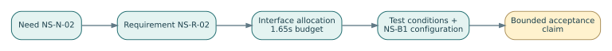

Chapter 12 — Engineering Synthesis: Defend the System, Not the Slide Deck
EN.645.662 · Week 12, the introductory course capstone. This final chapter connects the entire book and leads into Hypothetical Lab 12.
The final baseline is an argument
At the end of twelve weeks, Northstar has a mission framing, needs, operational scenarios, requirements, a functional baseline, architecture candidates, interface contracts, a trade-study recommendation, technical-management controls, red-team findings, and a verification and transition concept. The capstone is not a contest to produce the thickest document package. It is an argument: given these stakeholder outcomes and operating conditions, this controlled concept is a reasonable candidate for further engineering, subject to these assumptions, risks, and evidence gaps.
If the artifacts do not support one another, the package is not complete, no matter how many pages it contains. Synthesis is the discipline of aligning claims, reasoning, models, and the decision being requested. In particular, it distinguishes a concept recommendation from permission to deploy a safety-related transport service. An introductory engineering exercise cannot grant real-world operational authority.
12.1 Build the end-to-end reasoning chain
Take one fictional need: Riders requiring accessible evening trips need predictable, supported service. Trace it through the ConOps (request, status, boarding, exception), measures of effectiveness (whether the rider can reliably complete the intended trip), requirements (status, accessibility, fallback), functions (validate, assign, inform, authorize boarding, respond to failures), allocated architecture (dispatch, gateway, human operator, stop), interfaces, hazards, verification cases, and planned validation with representative stakeholders.
Read the chain in both directions. When you start at a test report, can you identify the requirement it addresses, the version of the system tested, and the need the requirement supports? When you start at a high-priority need, can you locate the required functions and evidence plan? A link whose semantics do not fit its target is an open problem even when the database reports 100% trace coverage.
Use a small claims–evidence–limitations table:
| Engineering claim | Available supporting material | Important limitation |
|---|---|---|
| Request life-cycle behavior is defined | State diagram and flow dictionary | Off-nominal cases may be incomplete |
| Dispatch alternatives were compared | Controlled trade model and sensitivity calculations | Weights and performance estimates are provisional |
| Telemetry semantics are controlled | Interface contract and boundary tests | Not yet validated in operational communications |
| Accessible service is feasible | Scenarios and preliminary subsystem assumptions | Human use, stop geometry and operational staffing unproven |
This table stops the team from overclaiming. Honest limitations are not weaknesses to hide; they make the next engineering phase more rational.
The mechanism beneath the method
A systems engineering conclusion is an argument whose scope must match the evidence supporting its claims; a persuasive architecture is not automatically validated.
Distinguishing related ideas
Verification asks whether the specification was met under stated conditions; validation asks whether the resulting capability helps the actual stakeholders.
Interpretation and boundary conditions
A readiness decision should keep open assumptions and dissent visible so later changes do not convert conditional confidence into fictional certainty.
12.2 Run a configuration consistency audit
The final package should be reproducible from a unique configuration identifier. Examine the usual defects:
- A requirement with no upstream stakeholder need or rationale.
- A critical function with no allocation or accountable owner.
- Two interface documents using different units, field semantics, or timing conditions.
- A trade study that cites superseded architecture estimates.
- A figure whose source revision differs from the controlled model.
- A verification matrix showing a planned test as passed execution.
- A high-risk finding with no treatment or residual-risk acceptance record.
- A review decision with no explicit criteria or authority.
An automated audit can find missing IDs and mismatched references. It cannot conclusively judge whether an architecture actually addresses a user need. Pair the tool with a manual semantic review: choose several high-risk chains and attempt to falsify them. Record each finding, severity, owner, and closure evidence. Do not overwrite historical evidence; issue controlled revisions and preserve why they were made.
12.3 Prepare two different communications
An executive brief should explain the mission, recommended direction, major alternatives, why the choice is defensible, the largest unresolved risks, and the specific permission being requested. It should not assume the decision-maker has the patience or background to interpret an entire SysML diagram. The technical package must retain the details: requirement IDs, architecture relationships, assumptions, test constraints, model limitations, and evidence sources.
Those two communications are not rivals. The brief summarizes claims; the engineering baseline supports them. If a reviewer asks, “What exactly would change your recommendation?” you should be able to open the sensitivity analysis. If asked, “What happens if vehicle telemetry is missing?” you should point to the relevant state transition, hazard, interface contract, and verification plan. Every major statement should have an evidence trail.
12.4 A good oral defense tests your judgment
Expect uncomfortable but constructive questions: Why does the boundary exclude the campus stop? Which stakeholder might disagree with the service priority? What happens when communication delay exceeds the modeled threshold? Which assumption has the strongest ability to reverse the trade study? Can the proposed validation recruit appropriate users safely? What do you not know?
A weak defense appeals to effort: “We spent many hours on the model.” Another weak defense responds with unsupported certainty: “Our simulation proves the architecture is safe.” A strong defense identifies the claim's precise scope and uses evidence: “The controlled synthetic simulation reproduces the nominal scenario, but has not been validated against real traffic or human response, so we recommend further testing, not deployment.”
When challenged with a genuine contradiction, do not invent a plausible answer on the spot. Open a finding, identify what evidence would resolve it, and explain how the decision could change. This is a professional strength. Technical reviews are supposed to expose uncertainty before irreversible commitments.
12.5 Worked mini-review: how a superficially complete package fails
Suppose 30 approved requirements have planned verification links. The structural report shows 100% planned coverage. However, two critical requirements use test procedures written for a superseded interface; one functional model still permits an invalid state transition; and the selected architecture's cost estimate excludes operator support. The package is not ready simply because the trace spreadsheet is full. The three issues affect evidence applicability, correct behavior, and the trade study's affordability claim. A defensible board may permit focused analysis while withholding concept approval pending controlled corrections.
This makes an important distinction: completeness of documentation, consistency of the baseline, sufficiency of evidence, and legitimacy of the decision are different dimensions. None should be collapsed into one arbitrary percentage.
12.6 Design your next professional learning step
Use the capstone review to identify which skills need depth. If your functional diagrams were weak, prioritize MBSE and state modeling. If your arguments relied on vague scores, study analytics, uncertainty, and decision science. If you struggled to define what a passing test establishes, deepen V&V and statistical assurance. If you treated organizational interfaces as afterthoughts, pursue systems of systems and enterprise engineering.
A personal learning roadmap should cite specific evidence of your own gaps, not aspirational labels. “Practice stochastic verification with independent samples” is actionable; “become good at engineering” is not. The archive's other courses and encyclopedia can supply the next layer of instruction, but the final capstone should be completed and reviewed on its own terms first.
12.7 Practice with worked responses
A. Trace. A critical requirement has a planned test but no cited need. Answer: Resolve its source and necessity, or justify it as a derived safety/architecture obligation. Do not mark it compliant merely because a test exists.
B. Evidence. A simulation matches the nominal synthetic dataset. What can you claim? Answer: The implementation/model reproduces that bounded dataset under stated assumptions, not that the real service is ready or safe.
C. Decision. What could reverse an architecture recommendation? Answer: Plausible changes to stakeholder weights, cost/availability estimates, mandatory constraints, or critical risk evidence; identify thresholds when possible.
D. Audit. A drawing is labeled revision 3 but the evidence index points to revision 2. Answer: Treat as a configuration discrepancy and reconcile the controlled baseline before relying on the drawing.
E. Defend. A reviewer asks why no human-in-the-loop validation has occurred. Answer: Explain the current concept-stage scope and safeguards; propose authorized representative validation rather than claiming simulation substitutes for it.
Graduate depth: engineering synthesis as argument under uncertainty
Synthesis tests whether local truths form a coherent whole
Individual subsystems can satisfy their specifications while the assembled system fails its mission. The reason is compositional: interfaces create new timing, information, physical, and human dependencies. An engineer defending the final baseline must therefore demonstrate more than the sum of independent pass results. In the hypothetical Northstar mobility service, vehicle availability, rider notifications, operator workload, and charging schedules may each appear acceptable, yet their coupled operation can create peak-period service collapse. The relevant claim is about end-to-end behavior within a stated operational envelope.
A useful way to discipline the synthesis is a three-column distinction: what is claimed, what supports the claim, and what remains conditional. A simulation might support an estimate of capacity under a particular demand distribution; a bench test might support an interface protocol; a field observation might reveal unfamiliar human responses. None of these evidence types automatically substitutes for the others. Valid synthesis traces assumptions across them and checks that their configurations and operational definitions are compatible.
End-to-end budgets expose hidden interactions
A mission outcome can be decomposed into contributions without assuming those contributions are independent. If a rider's response time is T = T_request + T_queue + T_assignment + T_travel, the expectation of the sum equals the sum of expectations, but a 95th-percentile response time is generally not the sum of each component's 95th percentile. Correlations, scheduling policies, and common disruptions determine the tail. Similarly, if availability requires several components operating simultaneously, multiplying component availabilities is justified only under appropriate dependence assumptions and an agreed definition of service success. Synthesis must preserve these subtleties when turning component evidence into mission claims.
The engineering case also includes tradeoffs across lifecycle stages. Adding spare vehicles may improve peak availability but raise energy, storage, software coordination, and maintenance demands. Extra redundancy may even increase complexity-driven failure opportunities if failover is poorly specified. The defended design needs a system-level value argument rather than the assertion that every local metric improved.
A defense is a falsifiable decision record
A compelling review explicitly offers counterexamples that could overturn the recommendation. Ask what happens under corrupted location updates, sustained high demand, operator absence, or an unavailable charging bay. Distinguish evidence already observed from predictions conditioned on models. Separate mandatory constraints from negotiable stakeholder preferences; a weighted utility score cannot legitimize violating a nonnegotiable safety constraint. Record important dissent and the evidence that would resolve it rather than erasing disagreement to create a polished narrative.
A final baseline can be represented conceptually as B = (configuration, requirements, models, evidence, exceptions, authority, time). The tuple is not a formal standard; it reminds us that a conclusion without version, context, and accountable decision maker is hard to reuse. If an interface is changed later, reviewers must identify which previous claims are invalidated and what re-verification is necessary. This links the final defense back to configuration management, project governance, and operational monitoring. The defensible outcome is not certainty: it is an explicit, revisable argument for action under residual uncertainty.
Read, rehearse, produce
Complete Hypothetical Lab 12, then assemble the original Week 12 controlled final package and oral defense. Use its own final assessment rubric and critical mastery gates. Your fictional Northstar lab is a stepping stone; the course requires your independent synthesis, transparent assumptions, reproducible claims, and a professional roadmap.
Review: Chapter 1 — System boundary · Chapter 4 — Requirements · Chapter 8 — Trade study.
Step 03 technical studio — defend a conditional engineering decision
At the final concept review, Northstar proposes a restricted supervised demonstrator, not unrestricted service. Its evidence package combines the NS-B1 requirements and allocations, the traceability matrix, interface timing budgets, trade-study sensitivity, hazard reasoning, and configuration-aware verification records. The purpose of synthesis is to show how these different kinds of claim fit together—not to average their confidence scores.
The argument structure
- Need and purpose: describe the rider and operator outcomes sought, including accessibility and controlled service limits.
- Design claim: explain which architecture and contracts are proposed, with mandatory constraints and competing alternatives.
- Evidence claim: specify observed data, analysis, test method, configuration, and residual uncertainty for each high-consequence requirement.
- Counterargument: record independent concerns such as common-cause failure, stale test applicability, and unvalidated passenger experience.
- Decision request: state the precise authorization sought and what remains prohibited.
Consider the quantitative evidence together: the latency allocation totals 1.65 s against a 2.50 s budget, the federated concept scores 74.5 against 73.5 for the demonstrator under one weight vector, and an illustrative common-cause hazard model yields 0.0031994 per demand. These numbers are not interchangeable. The first is an allocation, the second a modeled preference, and the third an assumed-event probability. None by itself establishes operational safety or validates the operating concept.
Solved final-defense exercise
The review board is shown four of four requirement rows, one old report for NS-R-04, and no representative human-systems evaluation. Is “full operational approval” justified? No. A reasonable concept-stage decision may allow limited laboratory integration with conditions while withholding live-operation authorization pending evidence currency, end-to-end testing, safety review, and stakeholder validation. A board should define the allowed next experiment rather than infer deployment authority from an attractive scorecard.
Source and reproducibility standard
The case calculations can be recomputed with python3 SE/K/B1/tools/step03_case_check.py from the repository root. General lifecycle and assurance terminology should be cross-checked with the NASA Systems Engineering Handbook and the relevant course requirements. All example probabilities, costs, scores, and operational conditions here are invented; they establish learning procedures, not project acceptance.
Step 03 reference deepening — build a defensible final claim graph
The capstone should make the logical form of its assertions visible. For example: claim: NS-B1 supports a supervised dispatch demonstration within a defined test envelope; argument: the architecture allocates requirements, interfaces meet defined budgets in verified scenarios, hazard controls are traced and test records apply to the controlled configuration; evidence: specifications, timing tests, model audits, risk reviews and signed restrictions. Any missing or stale evidence weakens the corresponding branch; a large pile of unrelated documents cannot fill it.
For the fictional interface latency, the 1.65-second allocated sum has 0.85-second nominal margin against the 2.5-second budget. For the fictional common-cause fault tree, the model yields 0.0031994 per demand under stated assumed probabilities. The first is budget arithmetic, the second is conditional risk-model output. Neither is a verified production latency or approved operational safety probability. A defensible review separates these evidence categories on the front page rather than presenting both as equally established measurements.

Create a final board table with claim ID, evidence revision, contradictory evidence, assumption, uncertainty, authority and allowed next action. If NS-R-04 remains supported only by NS-B0 evidence, a responsible decision might authorize more controlled bench testing but withhold release pending a current configuration-specific test. A project-management forecast belongs beside the technical decision but does not substitute for it.
Practice: The final packet shows 100% trace links, a favorable demonstration video and a missing current safety-relevant test. Answer: deny blanket readiness; describe which claim is unsupported, commission the exact missing evidence, and preserve the decision record and dissent. The job is to explain the boundary of what has been established, not to defend the attractiveness of the presentation.